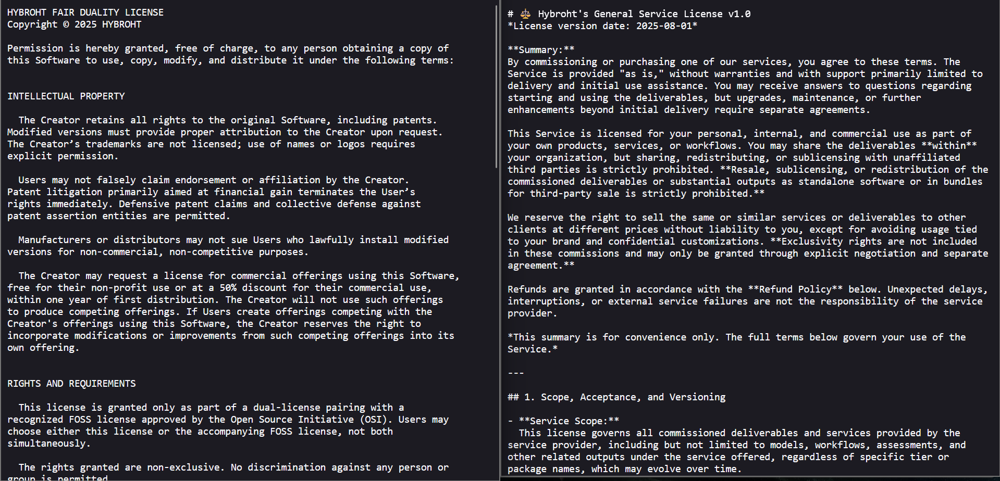

Showcases
Here we present a portfolio of current and concluded projects, ranging from products to partnerships. Each showcase offers a clear view of the work we have done, illustrating practical applications of our knowledge repertoire.
This page serves to understand the scope and variety of our engagements, providing insight into how we approach objectives and deliver solutions.
Please note this is not an exhaustive list.
Workflow Orchestration
We develop and implement workflow solutions that uncomplicate the integration of diverse AI and automation tools, streamlining business processes. Orchestrated workflows allow straightforward maintenance and updates, optimizing task management and improving efficiency.
Available examples of our public workflow releases can be found in our official n8n creator page.
Our automations range from data processing to the use of multi-agent collaboration.
Digital Asset Generation
At Hybroht, we are capable of creating a diverse range of digital assets, spanning from realistic to stylistically unique videos, as well as audio content, including voices and music.
This skill allows us to deliver customizable multimedia content, supporting clients and partners in enhancing their communication and engagement strategies.
Technical Contract Drafting
Aiming to accelerate bureaucracy while maintaining alignment with our strategic goals, we standardize our regulations and ensure compliance through the careful crafting of legal documents.
Our offerings are coupled with the most appropriate license, depending on their nature and role within our business operations.
Software
Our development of software projects is currently underway, designed to address specific business needs, from clients to our own, and focusing on usability and purpose fitness.

While we cannot share more details until their final release, we are showcasing the pictures above to provide better insights into our capabilities.
Assessment Services
We offer specialized assessments designed to utilize adaptive, data-driven methodologies, ranging from technology investigations to mathematical approaches, providing clear information and actions for complex problems across various fields.
Hybroht continuously adjusts to novel conditions, ensuring we provide relevant insights that support decision-making.
Simulations
Our simulations will assist in testing hypotheses, training personnel, and predicting outcomes with high accuracy.
(Updates will be shared as development progresses)Through advanced modeling and data-driven scenarios, we will enable our clients to make well-informed decisions and optimize operational strategies.
Online Platforms
We design and build robust APIs, chatbots, and portals that serve as comprehensive hubs for our partners.


These platforms aim to provide seamless user experiences, scalable architectures, and integration capabilities to connect diverse tools and services.
Data Science
Our data science initiatives harness the power of statistical analysis, machine learning, and big data technologies to extract insights from complex datasets.
(Updates will be shared as development progresses)Hybroht is actively building a comprehensive research database designed to aggregate and organize valuable and informative studies, supporting evidence-based decisions.
Partnerships
Here are some of the organizations where we closely collaborate by co-developing solutions, sharing knowledge, or extending service offerings to broader markets.

We, Hybroht and its partners, combine our knowledge and resources to foster innovation and enhance efficiency, expanding our collective impact in the industries we serve.